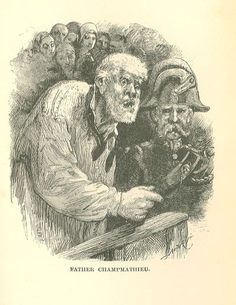

Les Misérables
CHAPTER VIII—AN ENTRANCE BY FAVOR
Although he did not suspect the fact, the mayor of M. sur M. enjoyed a sort of celebrity.
For the space of seven years his reputation for virtue had filled the whole of Bas
Boulonnais; it had eventually passed the confines of a small district and had been
spread abroad through two or three neighboring departments. Besides the service which
he had rendered to the chief town by resuscitating the black jet industry, there was
not one out of the hundred and forty communes of the arrondissement of M. sur M. which
was not indebted to him for some benefit. He had even at need contrived to aid and
multiply the industries of other arrondissements. It was thus that he had, when occasion
offered, supported with his credit and his funds the linen factory at Boulogne, the
flax-spinning industry at Frevent, and the hydraulic manufacture of cloth at Boubers-sur-Canche.
Everywhere the name of M. Madeleine was pronounced with veneration. Arras and Douai
envied the happy little town of M. sur M. its mayor.
The Councillor of the Royal Court of Douai, who was presiding over this session of
the Assizes at Arras, was acquainted, in common with the rest of the world, with this
name which was so profoundly and universally honored. When the usher, discreetly opening
the door which connected the council-chamber with the court-room, bent over the back
of the Président's arm-chair and handed him the paper on which was inscribed the line
which we have just perused, adding: "The gentleman desires to be present at the trial,"
the Président, with a quick and deferential movement, seized a pen and wrote a few
words at the bottom of the paper and returned it to the usher, saying, "Admit him."
The unhappy man whose history we are relating had remained near the door of the hall,
in the same place and the same attitude in which the usher had left him. In the midst
of his revery he heard some one saying to him, "Will Monsieur do me the honor to follow
me?" It was the same usher who had turned his back upon him but a moment previously,
and who was now bowing to the earth before him. At the same time, the usher handed
him the paper. He unfolded it, and as he chanced to be near the light, he could read
it.
"The Président of the Court of Assizes presents his respects to M. Madeleine."
He crushed the paper in his hand as though those words contained for him a strange
and bitter aftertaste.
He followed the usher.
A few minutes later he found himself alone in a sort of wainscoted cabinet of severe
aspect, lighted by two wax candles, placed upon a table with a green cloth. The last
words of the usher who had just quitted him still rang in his ears: "Monsieur, you
are now in the council-chamber; you have only to turn the copper handle of yonder
door, and you will find yourself in the court-room, behind the Président's chair."
These words were mingled in his thoughts with a vague memory of narrow corridors and
dark staircases which he had recently traversed.
The usher had left him alone. The supreme moment had arrived. He sought to collect
his faculties, but could not. It is chiefly at the moment when there is the greatest
need for attaching them to the painful realities of life, that the threads of thought
snap within the brain. He was in the very place where the judges deliberated and condemned.
With stupid tranquillity he surveyed this peaceful and terrible apartment, where so
many lives had been broken, which was soon to ring with his name, and which his fate
was at that moment traversing. He stared at the wall, then he looked at himself, wondering
that it should be that chamber and that it should be he.
He had eaten nothing for four and twenty hours; he was worn out by the jolts of the
cart, but he was not conscious of it. It seemed to him that he felt nothing.
He approached a black frame which was suspended on the wall, and which contained,
under glass, an ancient autograph letter of Jean Nicolas Pache, mayor of Paris and
minister, and dated, through an error, no doubt, the 9th of June, of the year II.,
and in which Pache forwarded to the commune the list of ministers and deputies held
in arrest by them. Any spectator who had chanced to see him at that moment, and who
had watched him, would have imagined, doubtless, that this letter struck him as very
curious, for he did not take his eyes from it, and he read it two or three times.
He read it without paying any attention to it, and unconsciously. He was thinking
of Fantine and Cosette.
As he dreamed, he turned round, and his eyes fell upon the brass knob of the door
which separated him from the Court of Assizes. He had almost forgotten that door.
His glance, calm at first, paused there, remained fixed on that brass handle, then
grew terrified, and little by little became impregnated with fear. Beads of perspiration
burst forth among his hair and trickled down upon his temples.
At a certain moment he made that indescribable gesture of a sort of authority mingled
with rebellion, which is intended to convey, and which does so well convey, "Pardieu!
who compels me to this?" Then he wheeled briskly round, caught sight of the door through
which he had entered in front of him, went to it, opened it, and passed out. He was
no longer in that chamber; he was outside in a corridor, a long, narrow corridor,
broken by steps and gratings, making all sorts of angles, lighted here and there by
lanterns similar to the night taper of invalids, the corridor through which he had
approached. He breathed, he listened; not a sound in front, not a sound behind him,
and he fled as though pursued.
When he had turned many angles in this corridor, he still listened. The same silence
reigned, and there was the same darkness around him. He was out of breath; he staggered;
he leaned against the wall. The stone was cold; the perspiration lay ice-cold on his
brow; he straightened himself up with a shiver.
Then, there alone in the darkness, trembling with cold and with something else, too,
perchance, he meditated.
He had meditated all night long; he had meditated all the day: he heard within him
but one voice, which said, "Alas!"
A quarter of an hour passed thus. At length he bowed his head, sighed with agony,
dropped his arms, and retraced his steps. He walked slowly, and as though crushed.
It seemed as though some one had overtaken him in his flight and was leading him back.
He re-entered the council-chamber. The first thing he caught sight of was the knob
of the door. This knob, which was round and of polished brass, shone like a terrible
star for him. He gazed at it as a lamb might gaze into the eye of a tiger.
He could not take his eyes from it. From time to time he advanced a step and approached
the door.
Had he listened, he would have heard the sound of the adjoining hall like a sort of
confused murmur; but he did not listen, and he did not hear.
Suddenly, without himself knowing how it happened, he found himself near the door;
he grasped the knob convulsively; the door opened.
He was in the court-room.
CHAPTER IX—A PLACE WHERE CONVICTIONS ARE IN PROCESS OF FORMATION
He advanced a pace, closed the door mechanically behind him, and remained standing,
contemplating what he saw.
It was a vast and badly lighted apartment, now full of uproar, now full of silence,
where all the apparatus of a criminal case, with its petty and mournful gravity in
the midst of the throng, was in process of development.
At the one end of the hall, the one where he was, were judges, with abstracted air,
in threadbare robes, who were gnawing their nails or closing their eyelids; at the
other end, a ragged crowd; lawyers in all sorts of attitudes; soldiers with hard but
honest faces; ancient, spotted woodwork, a dirty ceiling, tables covered with serge
that was yellow rather than green; doors blackened by handmarks; tap-room lamps which
emitted more smoke than light, suspended from nails in the wainscot; on the tables
candles in brass candlesticks; darkness, ugliness, sadness; and from all this there
was disengaged an austere and august impression, for one there felt that grand human
thing which is called the law, and that grand divine thing which is called justice.
No one in all that throng paid any attention to him; all glances were directed towards
a single point, a wooden bench placed against a small door, in the stretch of wall
on the Président's left; on this bench, illuminated by several candles, sat a man
between two gendarmes.
This man was the man.
He did not seek him; he saw him; his eyes went thither naturally, as though they had
known beforehand where that figure was.
He thought he was looking at himself, grown old; not absolutely the same in face,
of course, but exactly similar in attitude and aspect, with his bristling hair, with
that wild and uneasy eye, with that blouse, just as it was on the day when he entered
D——, full of hatred, concealing his soul in that hideous mass of frightful thoughts
which he had spent nineteen years in collecting on the floor of the prison.
He said to himself with a shudder, "Good God! shall I become like that again?"
This creature seemed to be at least sixty; there was something indescribably coarse,
stupid, and frightened about him.
At the sound made by the opening door, people had drawn aside to make way for him;
the Président had turned his head, and, understanding that the personage who had just
entered was the mayor of M. sur M., he had bowed to him; the attorney-general, who
had seen M. Madeleine at M. sur M., whither the duties of his office had called him
more than once, recognized him and saluted him also: he had hardly perceived it; he
was the victim of a sort of hallucination; he was watching.
Judges, clerks, gendarmes, a throng of cruelly curious heads, all these he had already
beheld once, in days gone by, twenty-seven years before; he had encountered those
fatal things once more; there they were; they moved; they existed; it was no longer
an effort of his memory, a mirage of his thought; they were real gendarmes and real
judges, a real crowd, and real men of flesh and blood: it was all over; he beheld
the monstrous aspects of his past reappear and live once more around him, with all
that there is formidable in reality.
All this was yawning before him.
He was horrified by it; he shut his eyes, and exclaimed in the deepest recesses of
his soul, "Never!"
And by a tragic play of destiny which made all his ideas tremble, and rendered him
nearly mad, it was another self of his that was there! all called that man who was
being tried Jean Valjean.
Under his very eyes, unheard-of vision, he had a sort of representation of the most
horrible moment of his life, enacted by his spectre.
Everything was there; the apparatus was the same, the hour of the night, the faces
of the judges, of soldiers, and of spectators; all were the same, only above the Président's
head there hung a crucifix, something which the courts had lacked at the time of his
condemnation: God had been absent when he had been judged.
There was a chair behind him; he dropped into it, terrified at the thought that he
might be seen; when he was seated, he took advantage of a pile of cardboard boxes,
which stood on the judge's desk, to conceal his face from the whole room; he could
now see without being seen; he had fully regained consciousness of the reality of
things; gradually he recovered; he attained that phase of composure where it is possible
to listen.
M. Bamatabois was one of the jurors.
He looked for Javert, but did not see him; the seat of the witnesses was hidden from
him by the clerk's table, and then, as we have just said, the hall was sparely lighted.
At the moment of this entrance, the defendant's lawyer had just finished his plea.
The attention of all was excited to the highest pitch; the affair had lasted for three
hours: for three hours that crowd had been watching a strange man, a miserable specimen
of humanity, either profoundly stupid or profoundly subtle, gradually bending beneath
the weight of a terrible likeness. This man, as the reader already knows, was a vagabond
who had been found in a field carrying a branch laden with ripe apples, broken in
the orchard of a neighbor, called the Pierron orchard. Who was this man? an examination
had been made; witnesses had been heard, and they were unanimous; light had abounded
throughout the entire debate; the accusation said: "We have in our grasp not only
a marauder, a stealer of fruit; we have here, in our hands, a bandit, an old offender
who has broken his ban, an ex-convict, a miscreant of the most dangerous description,
a malefactor named Jean Valjean, whom justice has long been in search of, and who,
eight years ago, on emerging from the galleys at Toulon, committed a highway robbery,
accompanied by violence, on the person of a child, a Savoyard named Little Gervais;
a crime provided for by article 383 of the Penal Code, the right to try him for which
we reserve hereafter, when his identity shall have been judicially established. He
has just committed a fresh theft; it is a case of a second offence; condemn him for
the fresh deed; later on he will be judged for the old crime." In the face of this
accusation, in the face of the unanimity of the witnesses, the accused appeared to
be astonished more than anything else; he made signs and gestures which were meant
to convey No, or else he stared at the ceiling: he spoke with difficulty, replied
with embarrassment, but his whole person, from head to foot, was a denial; he was
an idiot in the presence of all these minds ranged in order of battle around him,
and like a stranger in the midst of this society which was seizing fast upon him;
nevertheless, it was a question of the most menacing future for him; the likeness
increased every moment, and the entire crowd surveyed, with more anxiety than he did
himself, that sentence freighted with calamity, which descended ever closer over his
head; there was even a glimpse of a possibility afforded; besides the galleys, a possible
death penalty, in case his identity were established, and the affair of Little Gervais
were to end thereafter in condemnation. Who was this man? what was the nature of his
apathy? was it imbecility or craft? Did he understand too well, or did he not understand
at all? these were questions which divided the crowd, and seemed to divide the jury;
there was something both terrible and puzzling in this case: the drama was not only
melancholy; it was also obscure.
The counsel for the defence had spoken tolerably well, in that provincial tongue which
has long constituted the eloquence of the bar, and which was formerly employed by
all advocates, at Paris as well as at Romorantin or at Montbrison, and which to-day,
having become classic, is no longer spoken except by the official orators of magistracy,
to whom it is suited on account of its grave sonorousness and its majestic stride;
a tongue in which a husband is called a consort, and a woman a spouse; Paris, the
centre of art and civilization; the king, the monarch; Monseigneur the Bishop, a sainted
pontiff; the district-attorney, the eloquent interpreter of public prosecution; the
arguments, the accents which we have just listened to; the age of Louis XIV., the
grand age; a theatre, the temple of Melpomene; the reigning family, the august blood
of our kings; a concert, a musical solemnity; the General Commandant of the province,
the illustrious warrior, who, etc.; the pupils in the seminary, these tender levities;
errors imputed to newspapers, the imposture which distills its venom through the columns
of those organs; etc. The lawyer had, accordingly, begun with an explanation as to
the theft of the apples,—an awkward matter couched in fine style; but Benigne Bossuet
himself was obliged to allude to a chicken in the midst of a funeral oration, and
he extricated himself from the situation in stately fashion. The lawyer established
the fact that the theft of the apples had not been circumstantially proved. His client,
whom he, in his character of counsel, persisted in calling Champmathieu, had not been
seen scaling that wall nor breaking that branch by any one. He had been taken with
that branch (which the lawyer preferred to call a bough) in his possession; but he
said that he had found it broken off and lying on the ground, and had picked it up.
Where was there any proof to the contrary? No doubt that branch had been broken off
and concealed after the scaling of the wall, then thrown away by the alarmed marauder;
there was no doubt that there had been a thief in the case. But what proof was there
that that thief had been Champmathieu? One thing only. His character as an ex-convict.
The lawyer did not deny that that character appeared to be, unhappily, well attested;
the accused had resided at Faverolles; the accused had exercised the calling of a
tree-pruner there; the name of Champmathieu might well have had its origin in Jean
Mathieu; all that was true,—in short, four witnesses recognize Champmathieu, positively
and without hesitation, as that convict, Jean Valjean; to these signs, to this testimony,
the counsel could oppose nothing but the denial of his client, the denial of an interested
party; but supposing that he was the convict Jean Valjean, did that prove that he
was the thief of the apples? that was a presumption at the most, not a proof. The
prisoner, it was true, and his counsel, "in good faith," was obliged to admit it,
had adopted "a bad system of defence." He obstinately denied everything, the theft
and his character of convict. An admission upon this last point would certainly have
been better, and would have won for him the indulgence of his judges; the counsel
had advised him to do this; but the accused had obstinately refused, thinking, no
doubt, that he would save everything by admitting nothing. It was an error; but ought
not the paucity of this intelligence to be taken into consideration? This man was
visibly stupid. Long-continued wretchedness in the galleys, long misery outside the
galleys, had brutalized him, etc. He defended himself badly; was that a reason for
condemning him? As for the affair with Little Gervais, the counsel need not discuss
it; it did not enter into the case. The lawyer wound up by beseeching the jury and
the court, if the identity of Jean Valjean appeared to them to be evident, to apply
to him the police penalties which are provided for a criminal who has broken his ban,
and not the frightful chastisement which descends upon the convict guilty of a second
offence.
The district-attorney answered the counsel for the defence. He was violent and florid,
as district-attorneys usually are.
He congratulated the counsel for the defence on his "loyalty," and skilfully took
advantage of this loyalty. He reached the accused through all the concessions made
by his lawyer. The advocate had seemed to admit that the prisoner was Jean Valjean.
He took note of this. So this man was Jean Valjean. This point had been conceded to
the accusation and could no longer be disputed. Here, by means of a clever autonomasia
which went back to the sources and causes of crime, the district-attorney thundered
against the immorality of the romantic school, then dawning under the name of the
Satanic school, which had been bestowed upon it by the critics of the Quotidienne
and the Oriflamme; he attributed, not without some probability, to the influence of
this perverse literature the crime of Champmathieu, or rather, to speak more correctly,
of Jean Valjean. Having exhausted these considerations, he passed on to Jean Valjean
himself. Who was this Jean Valjean? Description of Jean Valjean: a monster spewed
forth, etc. The model for this sort of description is contained in the tale of Theramene,
which is not useful to tragedy, but which every day renders great services to judicial
eloquence. The audience and the jury "shuddered." The description finished, the district-attorney
resumed with an oratorical turn calculated to raise the enthusiasm of the journal
of the prefecture to the highest pitch on the following day: And it is such a man,
etc., etc., etc., vagabond, beggar, without means of existence, etc., etc., inured
by his past life to culpable deeds, and but little reformed by his sojourn in the
galleys, as was proved by the crime committed against Little Gervais, etc., etc.;
it is such a man, caught upon the highway in the very act of theft, a few paces from
a wall that had been scaled, still holding in his hand the object stolen, who denies
the crime, the theft, the climbing the wall; denies everything; denies even his own
identity! In addition to a hundred other proofs, to which we will not recur, four
witnesses recognize him—Javert, the upright inspector of police; Javert, and three
of his former companions in infamy, the convicts Brevet, Chenildieu, and Cochepaille.
What does he offer in opposition to this overwhelming unanimity? His denial. What
obduracy! You will do justice, gentlemen of the jury, etc., etc. While the district-attorney
was speaking, the accused listened to him open-mouthed, with a sort of amazement in
which some admiration was assuredly blended. He was evidently surprised that a man
could talk like that. From time to time, at those "energetic" moments of the prosecutor's
speech, when eloquence which cannot contain itself overflows in a flood of withering
epithets and envelops the accused like a storm, he moved his head slowly from right
to left and from left to right in the sort of mute and melancholy protest with which
he had contented himself since the beginning of the argument. Two or three times the
spectators who were nearest to him heard him say in a low voice, "That is what comes
of not having asked M. Baloup." The district-attorney directed the attention of the
jury to this stupid attitude, evidently deliberate, which denoted not imbecility,
but craft, skill, a habit of deceiving justice, and which set forth in all its nakedness
the "profound perversity" of this man. He ended by making his reserves on the affair
of Little Gervais and demanding a severe sentence.
At that time, as the reader will remember, it was penal servitude for life.
The counsel for the defence rose, began by complimenting Monsieur l'Avocat-General
on his "admirable speech," then replied as best he could; but he weakened; the ground
was evidently slipping away from under his feet.
CHAPTER X—THE SYSTEM OF DENIALS
The moment for closing the debate had arrived. The Président had the accused stand
up, and addressed to him the customary question, "Have you anything to add to your
defence?"
The man did not appear to understand, as he stood there, twisting in his hands a terrible
cap which he had.
The Président repeated the question.
This time the man heard it. He seemed to understand. He made a motion like a man who
is just waking up, cast his eyes about him, stared at the audience, the gendarmes,
his counsel, the jury, the court, laid his monstrous fist on the rim of woodwork in
front of his bench, took another look, and all at once, fixing his glance upon the
district-attorney, he began to speak. It was like an eruption. It seemed, from the
manner in which the words escaped from his mouth,—incoherent, impetuous, pell-mell,
tumbling over each other,—as though they were all pressing forward to issue forth
at once. He said:—
"This is what I have to say. That I have been a wheelwright in Paris, and that it
was with Monsieur Baloup. It is a hard trade. In the wheelwright's trade one works
always in the open air, in courtyards, under sheds when the masters are good, never
in closed workshops, because space is required, you see. In winter one gets so cold
that one beats one's arms together to warm one's self; but the masters don't like
it; they say it wastes time. Handling iron when there is ice between the paving-stones
is hard work. That wears a man out quickly One is old while he is still quite young
in that trade. At forty a man is done for. I was fifty-three. I was in a bad state.
And then, workmen are so mean! When a man is no longer young, they call him nothing
but an old bird, old beast! I was not earning more than thirty sous a day. They paid
me as little as possible. The masters took advantage of my age—and then I had my daughter,
who was a laundress at the river. She earned a little also. It sufficed for us two.
She had trouble, also; all day long up to her waist in a tub, in rain, in snow. When
the wind cuts your face, when it freezes, it is all the same; you must still wash.
There are people who have not much linen, and wait until late; if you do not wash,
you lose your custom. The planks are badly joined, and water drops on you from everywhere;
you have your petticoats all damp above and below. That penetrates. She has also worked
at the laundry of the Enfants-Rouges, where the water comes through faucets. You are
not in the tub there; you wash at the faucet in front of you, and rinse in a basin
behind you. As it is enclosed, you are not so cold; but there is that hot steam, which
is terrible, and which ruins your eyes. She came home at seven o'clock in the evening,
and went to bed at once, she was so tired. Her husband beat her. She is dead. We have
not been very happy. She was a good girl, who did not go to the ball, and who was
very peaceable. I remember one Shrove-Tuesday when she went to bed at eight o'clock.
There, I am telling the truth; you have only to ask. Ah, yes! how stupid I am! Paris
is a gulf. Who knows Father Champmathieu there? But M. Baloup does, I tell you. Go
see at M. Baloup's; and after all, I don't know what is wanted of me."
The man ceased speaking, and remained standing. He had said these things in a loud,
rapid, hoarse voice, with a sort of irritated and savage ingenuousness. Once he paused
to salute some one in the crowd. The sort of affirmations which he seemed to fling
out before him at random came like hiccoughs, and to each he added the gesture of
a wood-cutter who is splitting wood. When he had finished, the audience burst into
a laugh. He stared at the public, and, perceiving that they were laughing, and not
understanding why, he began to laugh himself.
It was inauspicious.
The Président, an attentive and benevolent man, raised his voice.
He reminded "the gentlemen of the jury" that "the sieur Baloup, formerly a master-wheelwright,
with whom the accused stated that he had served, had been summoned in vain. He had
become bankrupt, and was not to be found." Then turning to the accused, he enjoined
him to listen to what he was about to say, and added: "You are in a position where
reflection is necessary. The gravest presumptions rest upon you, and may induce vital
results. Prisoner, in your own interests, I summon you for the last time to explain
yourself clearly on two points. In the first place, did you or did you not climb the
wall of the Pierron orchard, break the branch, and steal the apples; that is to say,
commit the crime of breaking in and theft? In the second place, are you the discharged
convict, Jean Valjean—yes or no?"
The prisoner shook his head with a capable air, like a man who has thoroughly understood,
and who knows what answer he is going to make. He opened his mouth, turned towards
the Président, and said:—
"In the first place—"
Then he stared at his cap, stared at the ceiling, and held his peace.
"Prisoner," said the district-attorney, in a severe voice; "pay attention. You are
not answering anything that has been asked of you. Your embarrassment condemns you.
It is evident that your name is not Champmathieu; that you are the convict, Jean Valjean,
concealed first under the name of Jean Mathieu, which was the name of his mother;
that you went to Auvergne; that you were born at Faverolles, where you were a pruner
of trees. It is evident that you have been guilty of entering, and of the theft of
ripe apples from the Pierron orchard. The gentlemen of the jury will form their own
opinion."

The prisoner had finally resumed his seat; he arose abruptly when the district-attorney
had finished, and exclaimed:—
"You are very wicked; that you are! This what I wanted to say; I could not find words
for it at first. I have stolen nothing. I am a man who does not have something to
eat every day. I was coming from Ailly; I was walking through the country after a
shower, which had made the whole country yellow: even the ponds were overflowed, and
nothing sprang from the sand any more but the little blades of grass at the wayside.
I found a broken branch with apples on the ground; I picked up the branch without
knowing that it would get me into trouble. I have been in prison, and they have been
dragging me about for the last three months; more than that I cannot say; people talk
against me, they tell me, 'Answer!' The gendarme, who is a good fellow, nudges my
elbow, and says to me in a low voice, 'Come, answer!' I don't know how to explain;
I have no education; I am a poor man; that is where they wrong me, because they do
not see this. I have not stolen; I picked up from the ground things that were lying
there. You say, Jean Valjean, Jean Mathieu! I don't know those persons; they are villagers.
I worked for M. Baloup, Boulevard de l'Hopital; my name is Champmathieu. You are very
clever to tell me where I was born; I don't know myself: it's not everybody who has
a house in which to come into the world; that would be too convenient. I think that
my father and mother were people who strolled along the highways; I know nothing different.
When I was a child, they called me young fellow; now they call me old fellow; those
are my baptismal names; take that as you like. I have been in Auvergne; I have been
at Faverolles. Pardi. Well! can't a man have been in Auvergne, or at Faverolles, without
having been in the galleys? I tell you that I have not stolen, and that I am Father
Champmathieu; I have been with M. Baloup; I have had a settled residence. You worry
me with your nonsense, there! Why is everybody pursuing me so furiously?"
The district-attorney had remained standing; he addressed the Président:—
"Monsieur le Président, in view of the confused but exceedingly clever denials of
the prisoner, who would like to pass himself off as an idiot, but who will not succeed
in so doing,—we shall attend to that,—we demand that it shall please you and that
it shall please the court to summon once more into this place the convicts Brevet,
Cochepaille, and Chenildieu, and Police-Inspector Javert, and question them for the
last time as to the identity of the prisoner with the convict Jean Valjean."
"I would remind the district-attorney," said the Président, "that Police-Inspector
Javert, recalled by his duties to the capital of a neighboring arrondissement, left
the court-room and the town as soon as he had made his deposition; we have accorded
him permission, with the consent of the district-attorney and of the counsel for the
prisoner."
"That is true, Mr. Président," responded the district-attorney. "In the absence of
sieur Javert, I think it my duty to remind the gentlemen of the jury of what he said
here a few hours ago. Javert is an estimable man, who does honor by his rigorous and
strict probity to inferior but important functions. These are the terms of his deposition:
'I do not even stand in need of circumstantial proofs and moral presumptions to give
the lie to the prisoner's denial. I recognize him perfectly. The name of this man
is not Champmathieu; he is an ex-convict named Jean Valjean, and is very vicious and
much to be feared. It is only with extreme regret that he was released at the expiration
of his term. He underwent nineteen years of penal servitude for theft. He made five
or six attempts to escape. Besides the theft from Little Gervais, and from the Pierron
orchard, I suspect him of a theft committed in the house of His Grace the late Bishop
of D—— I often saw him at the time when I was adjutant of the galley-guard at the
prison in Toulon. I repeat that I recognize him perfectly.'"
This extremely precise statement appeared to produce a vivid impression on the public
and on the jury. The district-attorney concluded by insisting, that in default of
Javert, the three witnesses Brevet, Chenildieu, and Cochepaille should be heard once
more and solemnly interrogated.
The Président transmitted the order to an usher, and, a moment later, the door of
the witnesses' room opened. The usher, accompanied by a gendarme ready to lend him
armed assistance, introduced the convict Brevet. The audience was in suspense; and
all breasts heaved as though they had contained but one soul.
The ex-convict Brevet wore the black and gray waistcoat of the central prisons. Brevet
was a person sixty years of age, who had a sort of business man's face, and the air
of a rascal. The two sometimes go together. In prison, whither fresh misdeeds had
led him, he had become something in the nature of a turnkey. He was a man of whom
his superiors said, "He tries to make himself of use." The chaplains bore good testimony
as to his religious habits. It must not be forgotten that this passed under the Restoration.
"Brevet," said the Président, "you have undergone an ignominious sentence, and you
cannot take an oath."
Brevet dropped his eyes.
"Nevertheless," continued the Président, "even in the man whom the law has degraded,
there may remain, when the divine mercy permits it, a sentiment of honor and of equity.
It is to this sentiment that I appeal at this decisive hour. If it still exists in
you,—and I hope it does,—reflect before replying to me: consider on the one hand,
this man, whom a word from you may ruin; on the other hand, justice, which a word
from you may enlighten. The instant is solemn; there is still time to retract if you
think you have been mistaken. Rise, prisoner. Brevet, take a good look at the accused,
recall your souvenirs, and tell us on your soul and conscience, if you persist in
recognizing this man as your former companion in the galleys, Jean Valjean?"
Brevet looked at the prisoner, then turned towards the court.
"Yes, Mr. Président, I was the first to recognize him, and I stick to it; that man
is Jean Valjean, who entered at Toulon in 1796, and left in 1815. I left a year later.
He has the air of a brute now; but it must be because age has brutalized him; he was
sly at the galleys: I recognize him positively."
"Take your seat," said the Président. "Prisoner, remain standing."
Chenildieu was brought in, a prisoner for life, as was indicated by his red cassock
and his green cap. He was serving out his sentence at the galleys of Toulon, whence
he had been brought for this case. He was a small man of about fifty, brisk, wrinkled,
frail, yellow, brazen-faced, feverish, who had a sort of sickly feebleness about all
his limbs and his whole person, and an immense force in his glance. His companions
in the galleys had nicknamed him I-deny-God (Je-nie Dieu, Chenildieu).
The Président addressed him in nearly the same words which he had used to Brevet.
At the moment when he reminded him of his infamy which deprived him of the right to
take an oath, Chenildieu raised his head and looked the crowd in the face. The Président
invited him to reflection, and asked him as he had asked Brevet, if he persisted in
recognition of the prisoner.
Chenildieu burst out laughing.
"Pardieu, as if I didn't recognize him! We were attached to the same chain for five
years. So you are sulking, old fellow?"
"Go take your seat," said the Président.
The usher brought in Cochepaille. He was another convict for life, who had come from
the galleys, and was dressed in red, like Chenildieu, was a peasant from Lourdes,
and a half-bear of the Pyrenees. He had guarded the flocks among the mountains, and
from a shepherd he had slipped into a brigand. Cochepaille was no less savage and
seemed even more stupid than the prisoner. He was one of those wretched men whom nature
has sketched out for wild beasts, and on whom society puts the finishing touches as
convicts in the galleys.
The Président tried to touch him with some grave and pathetic words, and asked him,
as he had asked the other two, if he persisted, without hesitation or trouble, in
recognizing the man who was standing before him.
"He is Jean Valjean," said Cochepaille. "He was even called Jean-the-Screw, because
he was so strong."
Each of these affirmations from these three men, evidently sincere and in good faith,
had raised in the audience a murmur of bad augury for the prisoner,—a murmur which
increased and lasted longer each time that a fresh declaration was added to the proceeding.
The prisoner had listened to them, with that astounded face which was, according to
the accusation, his principal means of defence; at the first, the gendarmes, his neighbors,
had heard him mutter between his teeth: "Ah, well, he's a nice one!" after the second,
he said, a little louder, with an air that was almost that of satisfaction, "Good!"
at the third, he cried, "Famous!"
The Président addressed him:—
"Have you heard, prisoner? What have you to say?"
He replied:—
"I say, 'Famous!'"
An uproar broke out among the audience, and was communicated to the jury; it was evident
that the man was lost.
"Ushers," said the Président, "enforce silence! I am going to sum up the arguments."
At that moment there was a movement just beside the Président; a voice was heard crying:—
"Brevet! Chenildieu! Cochepaille! look here!"
All who heard that voice were chilled, so lamentable and terrible was it; all eyes
were turned to the point whence it had proceeded. A man, placed among the privileged
spectators who were seated behind the court, had just risen, had pushed open the half-door
which separated the tribunal from the audience, and was standing in the middle of
the hall; the Président, the district-attorney, M. Bamatabois, twenty persons, recognized
him, and exclaimed in concert:—
"M. Madeleine!"
CHAPTER XI—CHAMPMATHIEU MORE AND MORE ASTONISHED
It was he, in fact. The clerk's lamp illumined his countenance. He held his hat in
his hand; there was no disorder in his clothing; his coat was carefully buttoned;
he was very pale, and he trembled slightly; his hair, which had still been gray on
his arrival in Arras, was now entirely white: it had turned white during the hour
he had sat there.
All heads were raised: the sensation was indescribable; there was a momentary hesitation
in the audience, the voice had been so heart-rending; the man who stood there appeared
so calm that they did not understand at first. They asked themselves whether he had
indeed uttered that cry; they could not believe that that tranquil man had been the
one to give that terrible outcry.
This indecision only lasted a few seconds. Even before the Président and the district-attorney
could utter a word, before the ushers and the gendarmes could make a gesture, the
man whom all still called, at that moment, M. Madeleine, had advanced towards the
witnesses Cochepaille, Brevet, and Chenildieu.
"Do you not recognize me?" said he.
All three remained speechless, and indicated by a sign of the head that they did not
know him. Cochepaille, who was intimidated, made a military salute. M. Madeleine turned
towards the jury and the court, and said in a gentle voice:—
"Gentlemen of the jury, order the prisoner to be released! Mr. Président, have me
arrested. He is not the man whom you are in search of; it is I: I am Jean Valjean."
Not a mouth breathed; the first commotion of astonishment had been followed by a silence
like that of the grave; those within the hall experienced that sort of religious terror
which seizes the masses when something grand has been done.
In the meantime, the face of the Président was stamped with sympathy and sadness;
he had exchanged a rapid sign with the district-attorney and a few low-toned words
with the assistant judges; he addressed the public, and asked in accents which all
understood:—
"Is there a physician present?"
The district-attorney took the word:—
"Gentlemen of the jury, the very strange and unexpected incident which disturbs the
audience inspires us, like yourselves, only with a sentiment which it is unnecessary
for us to express. You all know, by reputation at least, the honorable M. Madeleine,
mayor of M. sur M.; if there is a physician in the audience, we join the Président
in requesting him to attend to M. Madeleine, and to conduct him to his home."
M. Madeleine did not allow the district-attorney to finish; he interrupted him in
accents full of suavity and authority. These are the words which he uttered; here
they are literally, as they were written down, immediately after the trial by one
of the witnesses to this scene, and as they now ring in the ears of those who heard
them nearly forty years ago:—
"I thank you, Mr. District-Attorney, but I am not mad; you shall see; you were on
the point of committing a great error; release this man! I am fulfilling a duty; I
am that miserable criminal. I am the only one here who sees the matter clearly, and
I am telling you the truth. God, who is on high, looks down on what I am doing at
this moment, and that suffices. You can take me, for here I am: but I have done my
best; I concealed myself under another name; I have become rich; I have become a mayor;
I have tried to re-enter the ranks of the honest. It seems that that is not to be
done. In short, there are many things which I cannot tell. I will not narrate the
story of my life to you; you will hear it one of these days. I robbed Monseigneur
the Bishop, it is true; it is true that I robbed Little Gervais; they were right in
telling you that Jean Valjean was a very vicious wretch. Perhaps it was not altogether
his fault. Listen, honorable judges! a man who has been so greatly humbled as I have
has neither any remonstrances to make to Providence, nor any advice to give to society;
but, you see, the infamy from which I have tried to escape is an injurious thing;
the galleys make the convict what he is; reflect upon that, if you please. Before
going to the galleys, I was a poor peasant, with very little intelligence, a sort
of idiot; the galleys wrought a change in me. I was stupid; I became vicious: I was
a block of wood; I became a firebrand. Later on, indulgence and kindness saved me,
as severity had ruined me. But, pardon me, you cannot understand what I am saying.
You will find at my house, among the ashes in the fireplace, the forty-sou piece which
I stole, seven years ago, from little Gervais. I have nothing farther to add; take
me. Good God! the district-attorney shakes his head; you say, 'M. Madeleine has gone
mad!' you do not believe me! that is distressing. Do not, at least, condemn this man!
What! these men do not recognize me! I wish Javert were here; he would recognize me."
Nothing can reproduce the sombre and kindly melancholy of tone which accompanied these
words.
He turned to the three convicts, and said:—
"Well, I recognize you; do you remember, Brevet?"
He paused, hesitated for an instant, and said:—
"Do you remember the knitted suspenders with a checked pattern which you wore in the
galleys?"
Brevet gave a start of surprise, and surveyed him from head to foot with a frightened
air. He continued:—
"Chenildieu, you who conferred on yourself the name of 'Jenie-Dieu,' your whole right
shoulder bears a deep burn, because you one day laid your shoulder against the chafing-dish
full of coals, in order to efface the three letters T. F. P., which are still visible,
nevertheless; answer, is this true?"
"It is true," said Chenildieu.
He addressed himself to Cochepaille:—
"Cochepaille, you have, near the bend in your left arm, a date stamped in blue letters
with burnt powder; the date is that of the landing of the Emperor at Cannes, March
1, 1815; pull up your sleeve!"
Cochepaille pushed up his sleeve; all eyes were focused on him and on his bare arm.
A gendarme held a light close to it; there was the date.
The unhappy man turned to the spectators and the judges with a smile which still rends
the hearts of all who saw it whenever they think of it. It was a smile of triumph;
it was also a smile of despair.
"You see plainly," he said, "that I am Jean Valjean."
In that chamber there were no longer either judges, accusers, nor gendarmes; there
was nothing but staring eyes and sympathizing hearts. No one recalled any longer the
part that each might be called upon to play; the district-attorney forgot he was there
for the purpose of prosecuting, the Président that he was there to preside, the counsel
for the defence that he was there to defend. It was a striking circumstance that no
question was put, that no authority intervened. The peculiarity of sublime spectacles
is, that they capture all souls and turn witnesses into spectators. No one, probably,
could have explained what he felt; no one, probably, said to himself that he was witnessing
the splendid outburst of a grand light: all felt themselves inwardly dazzled.
It was evident that they had Jean Valjean before their eyes. That was clear. The appearance
of this man had sufficed to suffuse with light that matter which had been so obscure
but a moment previously, without any further explanation: the whole crowd, as by a
sort of electric revelation, understood instantly and at a single glance the simple
and magnificent history of a man who was delivering himself up so that another man
might not be condemned in his stead. The details, the hesitations, little possible
oppositions, were swallowed up in that vast and luminous fact.
It was an impression which vanished speedily, but which was irresistible at the moment.
"I do not wish to disturb the court further," resumed Jean Valjean. "I shall withdraw,
since you do not arrest me. I have many things to do. The district-attorney knows
who I am; he knows whither I am going; he can have me arrested when he likes."
He directed his steps towards the door. Not a voice was raised, not an arm extended
to hinder him. All stood aside. At that moment there was about him that divine something
which causes multitudes to stand aside and make way for a man. He traversed the crowd
slowly. It was never known who opened the door, but it is certain that he found the
door open when he reached it. On arriving there he turned round and said:—
"I am at your command, Mr. District-Attorney."
Then he addressed the audience:—
"All of you, all who are present—consider me worthy of pity, do you not? Good God!
When I think of what I was on the point of doing, I consider that I am to be envied.
Nevertheless, I should have preferred not to have had this occur."
He withdrew, and the door closed behind him as it had opened, for those who do certain
sovereign things are always sure of being served by some one in the crowd.
Less than an hour after this, the verdict of the jury freed the said Champmathieu
from all accusations; and Champmathieu, being at once released, went off in a state
of stupefaction, thinking that all men were fools, and comprehending nothing of this
vision.